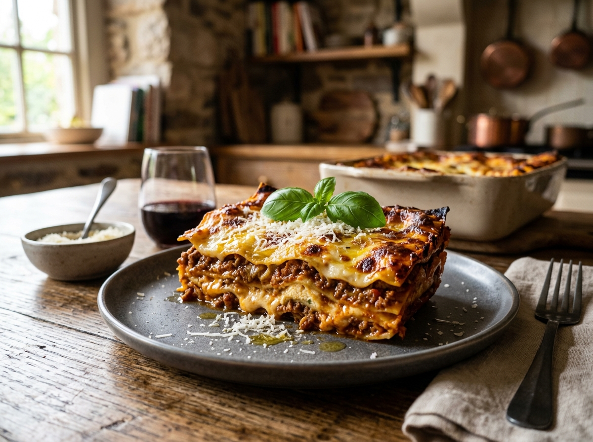

Classic Lasagna

Description
A comforting, warm, and rich Italian classic. This recipe layers tender pasta sheets, savory sweet Italian sausage and lean beef Bolognese sauce, creamy ricotta herb filling, and mountains of melted bubbling golden-brown mozzarella cheese.
Perfect for Sunday dinners, family gatherings, or meal prepping, this lasagna tastes even better the next day as the delicious Italian flavors continue to meld together perfectly.
Ingredients
- Lasagna noodles12 sheets
- Sweet Italian sausage1 lb
- Lean ground beef3/4 lb
- Finely chopped onion1/2 cup
- Garlic, minced2 cloves
- Crushed tomatoes28 oz
- Tomato paste12 oz
- Tomato sauce13 oz
- White sugar2 tbsp
- Dried basil leaves1 1/2 tsp
- Fennel seeds1/2 tsp
- Italian seasoning1 tsp
- Ricotta cheese16 oz
- Fresh Egg1
- Mozzarella cheese3/4 lb
- Grated Parmesan3/4 cup
Steps
-
01.
Prepare Sauce
Cook sausage, beef, onion, and garlic. Stir in crushed tomatoes, paste, sauce, and water. Season with herbs, sugar, and simmer for 1.5 hours.
-
02.
Boil Noodles
Cook lasagna noodles in boiling salted water for 8 to 10 minutes. Drain and rinse with cold water.
-
03.
Mix Ricotta
Combine ricotta cheese with egg, fresh parsley, and a pinch of salt.
-
04.
Assemble & Layer
Spread meat sauce in baking dish. Layer noodles, ricotta mixture, mozzarella, and meat sauce. Repeat and top with extra Parmesan.
-
05.
Bake Classic Lasagna
Cover with foil and bake at 375°F for 25 minutes. Remove foil, bake another 25 minutes until golden and bubbling.